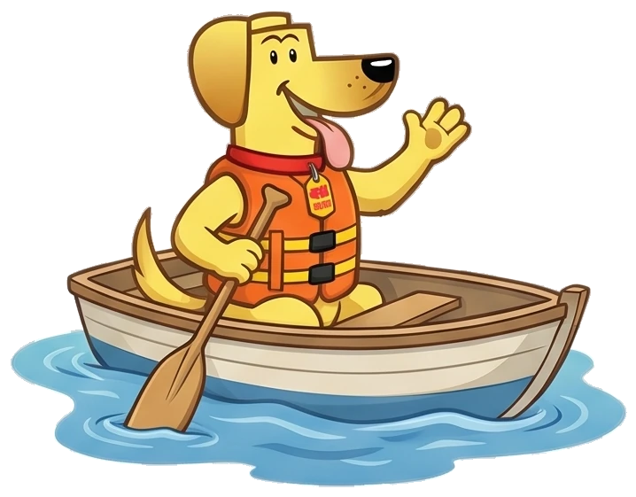
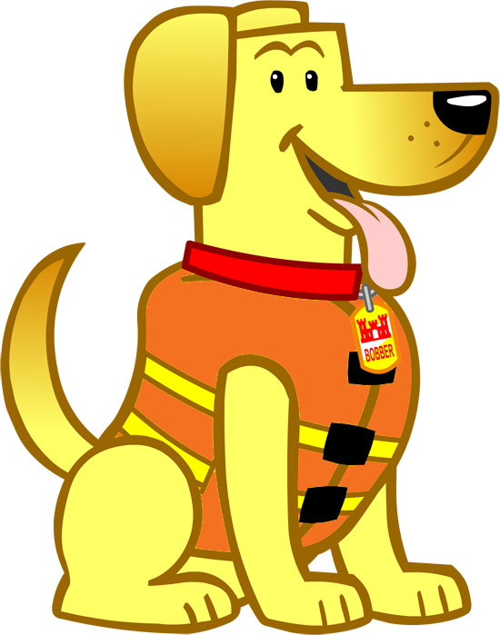
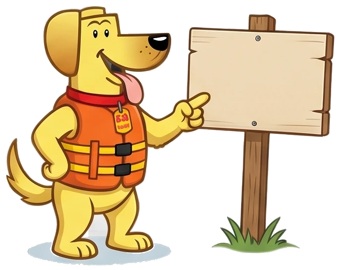

Lake levels & water data
Open the Tulsa District Water Control site for reservoir levels and water-management information.
View water dataFor teachers, parents, and lake staff
Plan a lake visit, get the district app, and find classroom materials. Kids can head back to Bobber’s side of the site anytime.
Back to Bobber
Check official lake information before you go, and follow local notices and posted rules when you arrive.
Open the Tulsa District Water Control site for reservoir levels and water-management information.
View water dataFind project office phone numbers and the official contact form for lake-specific questions.
Get lake office contactsSearch federal recreation areas and campsites, then check the lake page for local details.
Search Recreation.govRecreation information and water data for the 38 lakes and MKARNS rivers system.

Before you go: Water levels are not a measure of water quality or swimming safety. Check the individual lake’s current notices and follow all posted warnings and instructions.

Official USACE teaching and program materials for educators, lake staff, and community partners.
A 30–45 minute lesson outline on personal flotation devices (life jackets) with Bobber the Water Safety Dog.
Open the PFD lesson outlineA 30-minute lesson outline for teaching students Bobber’s four Golden Rules for staying safe in or near water.
Open Golden Rules PDFReview official care and use guidance before planning a Bobber costume appearance or outreach event.
Open costume guidelines PDFThese local copies are official USACE materials. Check the Bobber program page for updated versions.
For the full guide, open the Water Safety Resource Guide (140 pages).